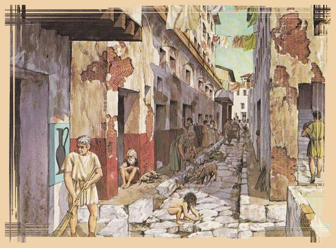

html {
font-size: 10px; /* px signifie 'pixels': la taille de base pour la police est désormais 10 pixels de haut */
font-family: "Open Sans", sans-serif; /* cela devrait être le reste du résultat obtenu à partir de Google fonts */
}
h1 {
font-size: 60px;
text-align: center;
}
p,
li {
font-size: 16px;
line-height: 2;
letter-spacing: 1px;
}
La représentation des pauvres

La représentation des pauvres dans l'Empire romain
Il existe peu de sources antiques des pauvres
Les sources chrétiennes littéraires
L'archéologie
L'épigraphie funéraire
Les sources grecques sont plus faciles à appréhender, il y a eu plus d'études faites sur les pauvres dans la Grèce antique